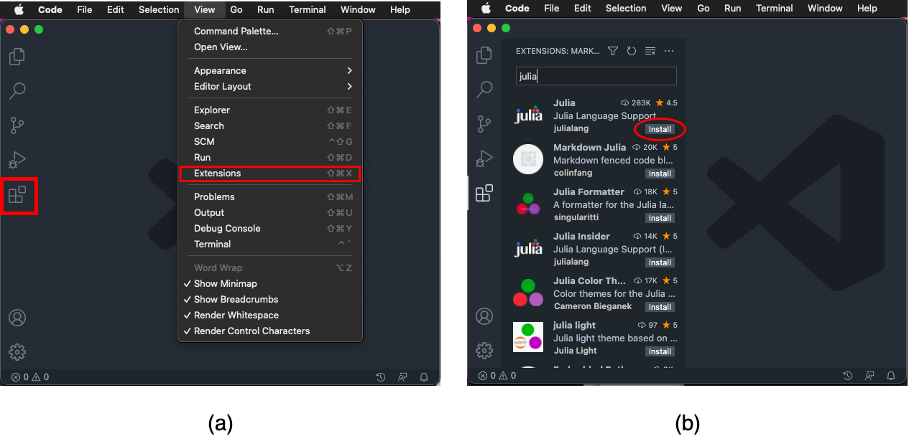
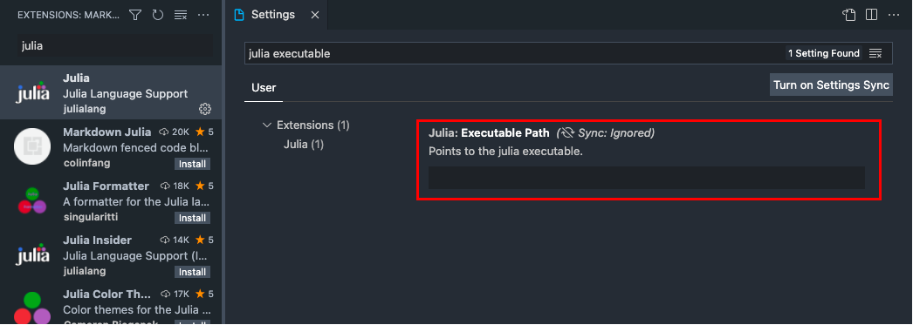
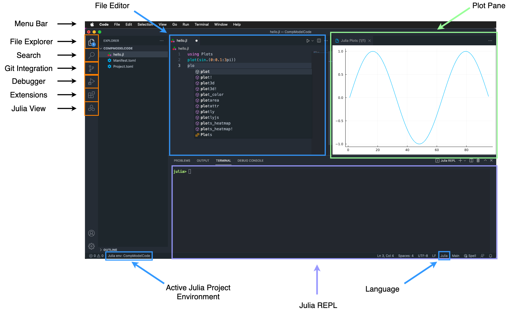
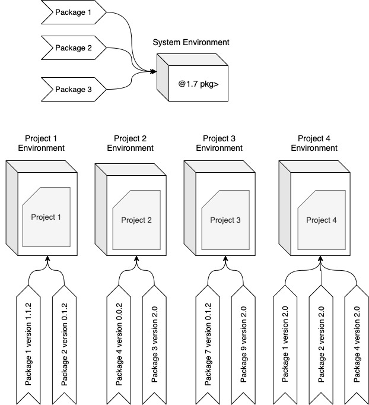

a = 3
b = 4
c = sqrt(a^2 + b^2)1 Hello Julia!
1.1 Installation & Setup
Note
This section is written for complete beginners to programming. If you know how to configure the language extensions in VS Code, please skip this section.
1.1.1 Installing Julia
To install the latest version of Julia, go to https://julialang.org/downloads/ and download the Current stable release corresponding to your operating system and architecture. For Windows machines, in most cases, you need to download the installer for 64-bit. For M1 Macs, it is recommended to download the Intel/Rosetta version than the M-series processor as the later version may be unstable. During the installation process, you might want to note down the installation directory for Julia (copy the path somewhere handy). This path might be required to configure your VS Code.
1.1.2 Installing Visual Studio Code
Note
Don’t confuse Visual Studio Code (a.k.a VS Code) with Visual Studio; they are two different applications.
You can install the latest version of VS Code from their home page.
1.1.3 Installing Julia Extension for VS Code
Once your VS Code installation is complete, you can open the application either from the Desktop (Windows) or the applications launchpad (Mac). After launching the VS Code application, there are three ways you can access the VS Code Extensions panel:
- via hotkeys: Press
Ctrl + Shift +X(for Windows) orCmd + Shift +X(for Mac). - via menu bar: From your VS Code top menu bar choose
View–>Extensions - via icons on the left of your VS Code application: Find and click on the icon with four squares, where one piece is detached from the rest (Figure 1.1. a).

This will open-up a panel towards the left side of your VS Code application; that’s your extensions panel. Towards the top of your extension panel you will see a search box where you have to search for Julia. In the results, you will see Julia listed as the top entry. Right next to it, you will also see the Install button. Click on it. (Figure 1.1. b).
1.1.4 Checking if the Julia Extension is configured properly
In most cases VS Code should be able to automatically configure the path to julia executable. To check if you have got everything right:
- Do
Ctrl + Shift + P(Windows) orCmd + Shift + P(Mac) - Type Start Julia REPL and hit enter.
If a new panel pop-up at the bottom of your VS Code with julia prompt (as shown below), that means your VS Code Julia extension is properly configured
julia>1.1.5 Fixing the Extension Configuration Manually
If you don’t get the julia prompt that means VS Code has failed to automatically configure the path to julia executable. To manually configure, follow these steps (also refer to Figure 1.2):
- Open your VS Code extensions panel using any one of the methods mentioned above.
- Search for Julia. Now instead of seeing the install button next to
Juliaentry, you will see a gear. Click on it. - Upon clicking on the gear button, a drop down menu will pop up. Choose
Extension Settingsfrom the list. This will open up the setting page. - In the setting page, you should find a search box at the top. In the search box, type
julia executable - Now you will see an empty field with the title “Julia: Executable Path”.
- (Windows users): In this field, you need to enter/paste the path you copied during step 1 (Section 1.1.1). (Make sure the path ends with
\bin\julia.exe). - (Mac users): Run julia from the applications launchpad (just the way you open any other application in Mac). Once the Julia application is open you will see a path within single quotes right before the Julia logo banner. Copy everything between those quotes (excluding the quotes) and paste them into the “Julia: Executable Path” field in VS Code Julia extension.
- (Windows users): In this field, you need to enter/paste the path you copied during step 1 (Section 1.1.1). (Make sure the path ends with
- Close VS Code completely and open it again for the changes to reflect.
- Now repeat the steps mentioned in Section 1.1.4 to check if your configuration is working.

1.1.6 Setting Julia as the default language in VS Code
- Follow the instructions described in Section 1.1.5 (until step three) to access the extension settings.
- Clear all existing text in the search box of extension setting and search for
default language mode. - In the textbox for Files: Default Language that appear, type
julia(make sure all are lowercase).
1.2 Know Your IDE
IDE stands for Integrated Development Environment and are software that combine developer tools into a unified user interface. The primary goal of an IDE is to increase the productivity of the developer by automating as many redundant configuration steps as possible. Modern IDEs like VS Code provide functionalities like syntax highlighting (highlights different component of language in different fonts and color), code completion (similar to word completion in MS Word), debugging (tools to debug your code when it is not behaving the way you wanted it to behave), code search (a local search engine for your project), file explorer, language terminal (for quick prototyping), and many more (Figure 1.3).

VS Code, by default, is a simple code/text editor and it is the extensions (similar to the Julia extension you installed) that bring the complete IDE experience to VS Code users. Figure 1.3 provides a visual overview of the VS Code environment during a typical Julia workflow with an active project environment. To activate the Julia language environment inside VS Code:
- Do
Ctrl + Shift + P(Windows) orCmd + Shift + P(Mac). This opens the Command Palette with a search box. - Type
Julia REPLinto the search box and hit enter.
If the Julia extension is properly configured, the above commands will open a new terminal with julia> prompt (in most cases as the bottom panel in VS Code window). This terminal with julia> prompt is commonly known as the REPL.
1.2.1 Julia REPL
REPL stands for Read-Evaluate-Print-Loop and is a method for exploratory programming and debugging. Julia’s REPL provides different prompt modes and the default one is the Julian (julia>) mode.
Julian Mode. In julian mode, you can run any julia commands and the results will be displayed within the same terminal. It is very common among julia programmers to use the julian mode in the REPL to try out simple algorithms and ideas. After placing the cursor on the REPL, if you press the up arrow or down arrow, you can access your REPL history (i.e. commands you ran in the REPL).
Help Mode. To access help mode, first place the cursor on the REPL and press
?in your keyboard. You will see that thejulia>prompt have changed tohelp?>prompt. This means you are in the help mode. Inside the help mode if you type a function name and hit enter, julia will attempt to print the documentation associated with that function/command in the same terminal.Package Mode. Package mode can be accessed from the julian mode by pressing
]key. This will turn thejulia>prompt to(@v1.7) pkg>prompt. Package mode is needed for installing, updating, and removing julia packages from your projects and computer.
To return to the default julian mode from one of the other modes, press backspace.
1.2.2 Installing Packages
Once you are in the package manager mode you can install a package using the command add. For e.g., to install the StatsBase package you’ll enter add StatsBase into your package manager mode and hit enter. Once the installation of the package is over, the prompt will return back to (@v1.7) pkg. To remove a package you use the rm command, and to update a package you use update command. Just like the add command, you also need to pass the name of the package in all these cases. You can use the st command to see the list of packages installed in your computer/project environment.
1.2.2.0.1 But What are Packages?
A Julia package or a library is a collection of functions and sub-modules surrounding an idea or concept bundled as a single unit. Each function can be considered as a collection of code whose objective is to perform a specific task. The standard Julia installation comes with only a handful of very important packages to get you started. To extend the capabilities of julia, you install packages with the help of julia’s package manager (Section 1.2.2).
1.2.3 Julia Files
Although you can completely develop julia packages/programs/scripts within the julia REPL, an easier and faster workflow for developing code is by writing the commands in a file and running that file in the julia REPL. To open a new file, do Cmd + N (Mac) or Ctrl +N (Windows). You can also open a new file using the menu bar: Choose File –> New File. If you have configured the default language for VS Code as julia (Section 1.1.6), the newly opened file will be a julia file. It is important for VS Code to know the type of the file for syntax highlighting, auto code completion and for running the file in the appropriate language’s compiler. Once you have a file open in your VS Code, you can start writing your code line by line in that file.
1.2.4 Running Your First Julia Script
Suppose you wanted to write a julia script to solve for hypotenuse using the pythagoras theorem. You know that as per the pythagoras theorem, \(c = \sqrt{a^2 + b^2}\), where \(c\) is the hypotenuse, and \(a\) and \(b\) are the sides of a right triangle. You also know that \((3,4,5)\) is a pythagorean triple. So now let’s implement this in code and see if it gives the right answer.
As a first step you enter the following lines of code into your newly opened julia file in VS Code:
Now save this file either using Cmd + S command or File –> Save. You can give any names you want, but it is always recommended to use meaningful names (in this case, say pythagoras.jl) so it is easier to find these files later. While saving the file also make sure the file have a .jl extension. Once you have saved the file, you have three ways to run this script:
- Manually run the script line by line.
- Run the script as a whole.
- Run the file from REPL.
To manually run the script line by line, you can place the cursor on the first line of code and then do Shift + Enter. If the cursor hasn’t moved automatically to the next line, you can use the down arrow key to move the cursor to the next line. Now you repeat Shift+Enter until the last line of code in your file. Once a line of code is executed, the output of that command is either shown right next to the command or is printed in the REPL.
To run the script as a whole, you click on the play button you see in the tab bar of VS Code. While running scripts using this method, only the output of the last line of code is displayed in the REPL. In our case, the output will be:
5.0To run the file in REPL, you type include("YourFileName.jl") (in our case include("pythagoras.jl")) into your REPL and hit enter. The codes’ behavior will be similar to the one when you run the script as a whole using the run button.
1.3 Project Environments
A good programming practice is to always have separate folders for each Julia project you are working on. However, just having separate folders isn’t going to ensure either reproducibility or an isolated workspace. (Reproducibility is the property of your project/code to behave exactly in the same way in a computer other than one in which it was developed.). To have an isolated workspace, on top of having a separate folder for your projects, you should also be having what’s called separate project environments (Figure 1.4). Project environments are like isolated pockets of spaces where your interaction with one pocket doesn’t affect the state of another pocket.

When you install a specific version of Julia, Julia creates an environment for that particular version. For example, when you installed Julia 1.7 in your computer, julia also created an environment with the name 1.7. This is sometimes referred as the global environment or the system environment. If you didn’t activate a particular project’s local environment before staring to work on your project, by default the system environment will be chosen and all your interaction with the package manager will be affecting the package state of your Julia’s system environment. For every project environment (including system environment), Julia creates two files: Manifest.toml and Project.toml. The goal of these files is to captures the list of packages along with their version number that you are installing within that environment.
To activate a local environment for your project:
- Open your project folder using VS Code:
File–>Open Folder. - Now start the Julia REPL using
Ctrl + Shift + P(orCmd + Shift + P). - Enter package manager mode. If you are seeing
(@v1.7) pkg, that means you are in Julia’s system environment. - To create
\activate local environment for your project, typeactivate .and hit Enter. - If your project environment was successfully activated,
(@v1.7) pkgwill turn into(Your Folder Name) pkg.